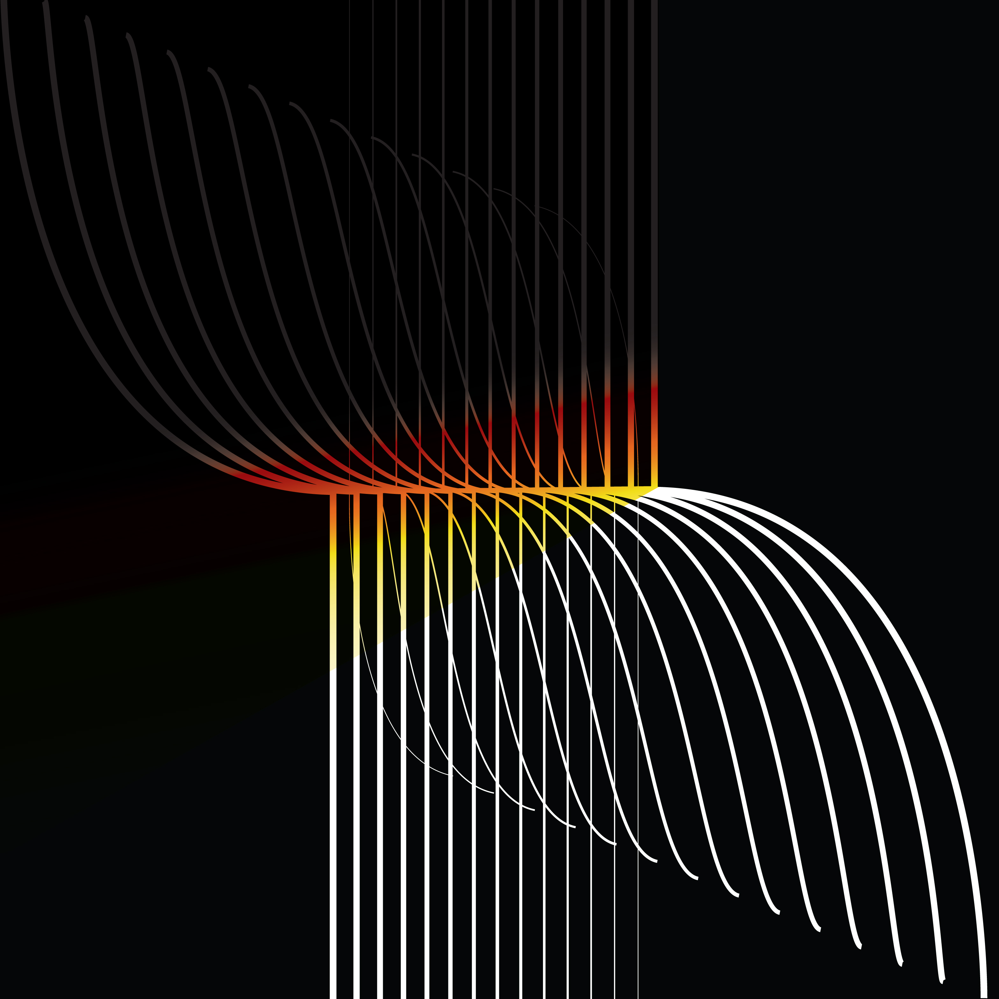

fuller milk
Inspired by the beauty of change in metalworking, this packaging design plays with the contrast between straight rigid lines and organic curvy lines.
A fuller is a tool used to form metal when hot.
Like how blacksmiths forge metal and give shape to them, fuller is a milk product that provides calcium and strengthens bones.
structure endurance potential